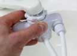

압축카본필터
신체에 필요한 5대 필수영양소 중 하나인 미네랄.
이스프링의 압축카본필터는 물속에 들어있는 몸에 좋은 미네랄은 지켜주고,
140가지 이상의 유해성분은 제거합니다.

유해 성분
제거
이스프링 압축카본필터
eCoupled 테크놀로지
물과 전기가 공존하는 정수기의 안전과 위생을 지키기 위해,
이스프링에는 무선으로 전력을 공급하는 암웨이의 세계적인 특허기술
eCoupled 테크놀로지가 탑재되었습니다.
eCoupled 테크놀로지는 세계 유수 IT 기업들도 다양한 분야에서
활용하고 있습니다.
-

스마트폰
-

교통
-
뷰티 디바이스
-
첨단과학
-

전자제품

무선 UV램프
자외선(UV)은 화학물질을 사용하지 않고
물 속 미생물들을 처리하기 위한 탁월한 수단입니다.
가장 효과적인 254nm자외선으로 마지막 과정에서 물 속에 있는
바이러스와 박테리아를 99.99%까지 살균합니다.
* 출처 : 식품과학기술대사전

바이러스·박테리아
99.99%
살균
직수 방식
빠르게 정수된 물은 식수는 물론, 생으로 먹는 과일이나 야채를 씻을 때,
그리고 요리를 할 때 등 생활 전반에 편리하게 사용할 수 있습니다.

- 식수
- 세탁수
- 조리수
스마트칩
가정마다 정수기 사용패턴이 달라
정해진 날에만 하는 획일적인 필터교체만으로는 안심할 수 없습니다.
그래서 이스프링 스마트칩은 실시간으로 정수기 상태를 체크해
최적의 필터 교체시기를 알려줍니다.
- 1) 이상 발생 시
램프가 깜박 거리며
위험을 표시해줍니다. - 2) 1년 이상 혹은
5000리터이상 사용 시
필터 교체 알람이 울립니다. - 3) 필터 카트리지
사용량을 알려줍니다.
6가지 항목 인증
NSF는 공공보건 규격을 작성하고 이에 대한 제3자 시험/인증을
제공하는 기관으로, 1996년에 세계보건기구 WHO의 협력 센터가 되어
실내환경, 공기, 물, 식품 안전 분야에 대한 다양한 공동 연구에
참여하고 있습니다.
NSF의 가정용 정수기 테스트는 재질, 구조, 정수 성능에 대한
세 가지 시험을 통해 이뤄지며, 세 가지 모두를 통과해야 NSF
인증을 받게 됩니다.
이스프링은 NSF로부터 6가지 항목을 인증받았습니다.

-
- NSF / ANSI 53
- 각종 유기화합물
제거
-
- NSF / Protocol 473
- 과불화화합물
PFOA, PFOS 처리
-
- NSF / ANSI 42
- 맛, 냄새 등
심미적 요인의 제거
-

- NSF / ANSI 401
- 의약품 등 신종 오염물질
15종 감소/제거
-

- NSF / ANSI 55B
- 박테리아,
미생물 등 비활성화
-
- NSF / Protocol 477
- 남조류에서 배출되는 독소
(마이크로시스틴) 처리
경제적인 유지비
이스프링은 물이 흐를때만 전원이 켜지는 인스턴트 ON
시스템을 개발하여 불필요한 대기전력을 줄이고 정수할 때만
효율적으로 전기를 사용합니다. 불필요한 부가기능을 없애고
좋은물 하나에만 집중하는 기술로 가정의 경제는 물론 지구 환경까지 생각합니다.

- 1L당 평균 비용
- ￦83.28
정수할 때만
전원 자동ON
(1년에 5,000리터 사용 기준, 정격 유량 3.4L/분 기준, 1일 사용 시간은 약 4분으로 전기요금은 제외함)
이스프링 퍼싯 & 전환기 타입
-

퍼싯 타입
- 기존 수도꼭지를 통해 정수되지 않은 물을 사용하면서
동시에 퍼싯을 통해 정수된 좋은 물을 사용할 수 있습니다.
-


전환기 타입
- 수도꼭지에 직접 연결해 수돗물이
이스프링을 통해 정수되어 나오는 방식입니다.
-
- NSF
- (미국위생재단 인증)
-
- WQA
- (미국수질협회 인증)
-
- 세계판매 1위
- (Verify Markets Study of 2014 global sales,
s가정용 정수기 판매 금액(렌탈 제외) 기준)
- 상단의 ´자료´ 탭에서 이전 영상들을 보실 수 있습니다.
- 크기
-
- 178 X 327 (mm)
- 품질보증기간
-
- 2년
- 주의사항
-
- 1) 필터 제품은 포장 개봉 후 반품이 불가하오니 주의하여 주십시오. (단, 제품 이상 시 교환/환불 가능)
- 2) 제품 불만족으로 인해 환불 또는 교환을 원하시면 ABO는 구입 후 1개월(소비자는 20일) 이내에 제품과 구매영수증을 지참하여 반품하시면 됩니다.
기타 환불 또는 교환조건은 공정거래위원회 고시 소비자분쟁해결기준에 따르며, 반품과 관련한 자세한 내용은 전화(1588-0080)로 문의 바랍니다. - 3) 이스프링의 좋은 물을 건강하고 깨끗하게 마시기 위해서는 전환기와 퍼싯(스파웃)을 정기적으로 클리닝 하는 것이 중요하며,
2년에 한번 전환기와 퍼싯 키트의 점검 또는 교체를 권장합니다.
점검 또는 교체를 위해서는 기술지원센터 (1588-0080)로 문의 바랍니다.
바오이퀘스트 포뮬러로 강력한 세정력을 제공하고 자연에서 유래한 코코넛성분이 기름기와 말라붙은 음식 찌꺼기를 깨끗이 제거하며, 알로에 베라와 들깻입(시소) 추출물이 손을 부드럽게 해 줍니다.
-

-

-
 1L
1L
용량 -
 알
알
칼리성 -
 중성
중성
-
 산성
산성

- 생분해성 : 생분해성이며 민감한 피부를 자극할 수 있는 잔여물을 남기지 않습니다.
- 고농축 : 경제적이며, 적은 양을 사용해도 충분합니다.
- 피부과 테스트 완료 : 공정하고 객관적인 피부과 전문의의 테스트를 완료하였습니다.
- 바이오퀘스트 포뮬러는? 암웨이만의 독자 개발 포뮬러이며 암웨이가 인증하는 마크입니다.
- 미국 환경 보호국(U.S. EPA)의 전문적인 기준을 충족시키는 제품에만 부여하는 인증을 획득하였습니다.
Safer Choice 마크가 부착된 제품은 일반 제품 대비 까다롭게 선정한 성분을 사용하면서도 성능이 좋은 제품을 의미합니다.
- 미국 환경 보호국(EPA)의 Safer Choice 인증이 이 제품을 보증한다는 것을 의미 하지는 않습니다. Safer Choice 로고는 암웨이가 EPA에 제출한 내용에 따를 때 본 제품의 성분이 기존의 제품보다 더 좋은 성분을 함유하고 있다는 것을 나타내는 것입니다. EPA의 Safer Choice 인증은 제품의 성분, 구성 및 특성에 대한 정보에 있어서 전적으로 암웨이가 제시한 내용에 대한 진실성과 신뢰를 바탕으로 하고 있습니다. EPA의 Safer Choice 인증은 별도로 제품 조성성분에 대해 화학 분석 등을 하지 않으며, 암웨이의 성분과 관련 없는내용에 대해서는 평가하지 않습니다. EPA의 Safer Choice 인증은 현재의 과학적 이해와 정보에 근거하여, 제품의 특정 기준에 대해서만 전문적인 의견 및 평가를 제공합니다.
전환기 튜브의 세척 및 소독
-
- 1 전환기와 튜브를 분리하여 튜브를 플라스틱이나 유리 용기에 수평이 되도록 담아놓습니다.
-
- 2 튜브가 충분히 잠길 수 있도록 식초를 부어줍니다.
-

- 3 약 1시간 가량 담가 놓습니다. 이때, 장갑을 착용하고 3~4회 정도 꺼내고 담는 것을 반복 담는 것을 반복하여 식초가 충분히 섞일 수 있도록 해주십시오.
-
- 4 장갑을 착용한 후, 튜브를 꺼내 깨끗한 물로 충분히 헹궈 줍니다.
- 5 필요 시 위의 과정을 반복합니다.
전환기의 세척 및 소독
-
- 1 튜브와 전환기를 분리한 후, 전환기 레버를 정수 방향에 위치 시킵니다.
-
- 2 정수 유출구의 외부 마개와 중간 마개를 제거합니다.
-
- 3 볼펜과 같은 끝이 뾰족한 도구를 이용하여 내부의 가스켓을 제거합니다.
-
- 4 40ml의 디쉬드랍스를 1리터의 따뜻한 물에 섞어 희석액을 준비합니다.
-
- 5 전환기를 준비된 희석액에 20분 가량 담가 놓습니다.
-
- 6 장갑을 착용하고 전환기를 꺼낸 다음, 희석액을 스프레이 용기에 담아 충분히 분무한 후 칫솔을 이용하여 닦기 어려운 부분을 세척합니다.
-
- 7 깨끗한 물을 이용하여 충분히 헹궈줍니다.
-


- 8 가스켓과 정수 유출구의 중간 마개에 끼워 전환기에 조립합니다.
-

- 9 튜브와 전환기를 이스프링 정수기에 조립하고 충분히 물을 흘려 보낸 후 사용합니다.
- 사용방법
-
- 사용 전 흔들어 주십시오. 얼룩 방지를 위하여 이 제품을 의류에 직접 부어 사용하지 마십시오.
- 일반세탁기
- 세탁물의 양 2kg 3.5kg 6kg
- 물 표준량(수위) 30L 45L 70L
-
표준사용량
10ml
= 1/2 뚜껑 15ml
= 3/4 뚜껑 30ml
= 1 + 1/2 뚜껑
- 드럼세탁기
- 세탁물의 양 4kg 6kg
- 물 표준량(수위) 20L 30L
-
표준사용량
15ml
= 3/4 뚜껑 30ml
= 1 + 1/2 뚜껑
- 손빨래
- 세탁물의 양 1kg
- 물 표준량(수위) 10L
-
표준사용량
5ml
= 1/4 뚜껑


-
글리스터 치약
-
치아 에나멜층의 손상 없는 프라그 제거와 세정에 탁월한 민트향 치약
제품 자세히 보기

-
글리스터 칫솔 2개
-
중간 모와 부드러운 모가 적절히 결합되어효과적인 양치질을 도와주는 칫솔
제품 자세히 보기

-
G&H 너리쉬+ 컴플렉션 바 (1박스 / 3개입)
-
피부의 보습 밸런스와 건강을 유지시켜 주는 순하고 부드러운 전신용 비누
제품 자세히 보기

-
G&H 너리쉬+ 바디 워시 (400ml)
-
피부를 깨끗이 세정하면서 피부 진정을 돕는 촉촉하고 크리미한 바디 워시
제품 자세히 보기

-
G&H 너리쉬+ 바디로션 (400ml)
-
피부 보습막 재건을 돕고 24시간 피부 보습을 유지시켜 주는 바디 로션
제품 자세히 보기